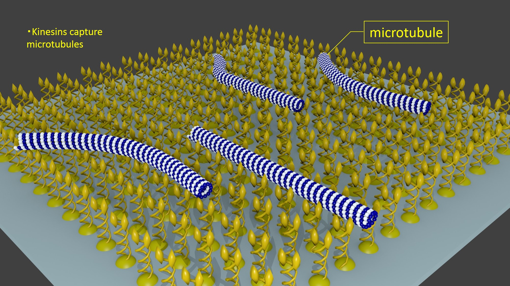

To achieve our goal, we combined gliding assay and nanofabrication for a simulator.
1. Gliding Assay

2. Microfabrication
We used an experiment method called gliding assay to imitate human collective motion. In a gliding assay, motor-proteins such as kinesin are adsorbed to the glass plate and are immobilized. When microtubules are put on the surface of the plate, they are captured by the bound motors. Then, they are transported along the surface in a ‘gliding’ movement by adding ATPs to motors. Microtubules can interact each other when tagged some proteins or changing solvent.
We created attractive interaction among microtubules by depletion force to resemble microtubules’ motion to human one. Furthermore, there was a big merit that we can observe phenomenon in the real world like human collective motion when we used gliding assay.
We used microfabrication technique to observe how pillars affect a microtubules’ motion. Microfabrication is a technique to make a tiny structure using chemical reactions or physical characters instead of processing by machine, which is difficult. Semiconductor manufacturing is a good example of microfabrication, and a method called lithography is utilized in this process. In our study, we made micro pillars by lithography and transcription technique.
We designed any shape and arrangement of pillars by drawing software. Then a special laser processor read the design from the software and made a chrome mask. Ultraviolet rays are irradiated to a photo-resist-covered glass plate through the chrome mask, and a mold of photo-resist are developed. After that, PDMS(polydimethylsiloxane) is poured into the mold and cooled it down, and finally micro-pillars are made as you designed.
Combining these two techniques, we succeeded to make a simple simulator.